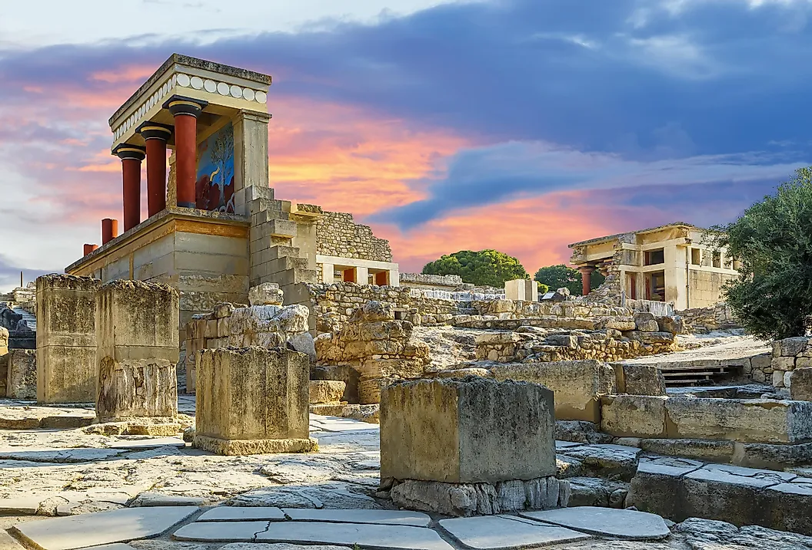
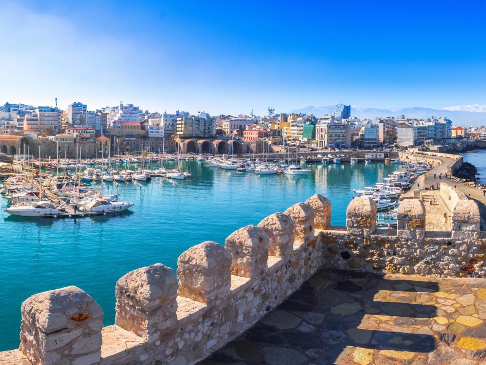
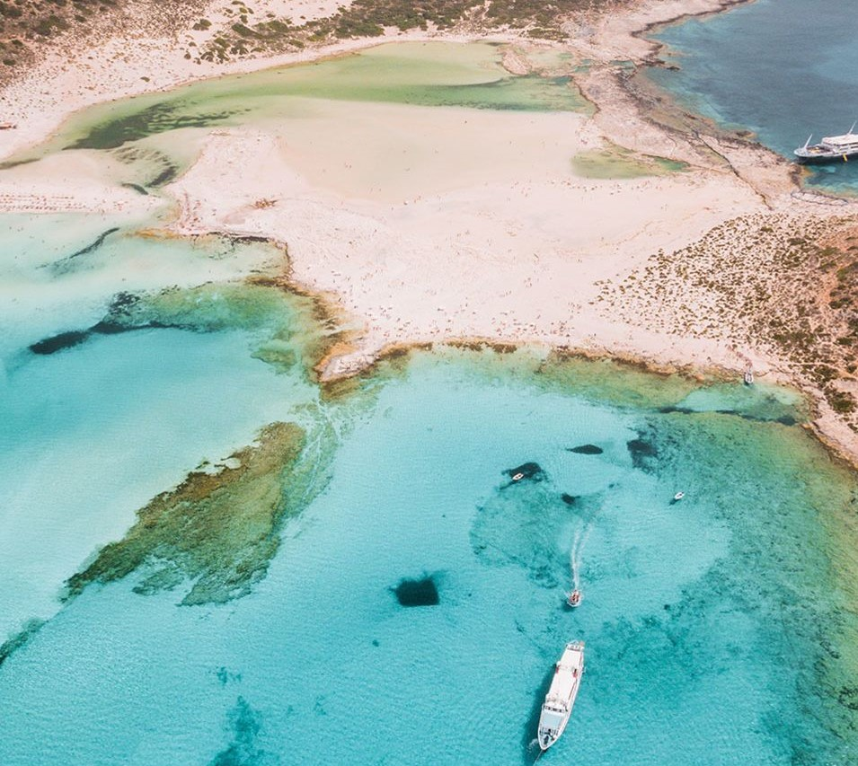
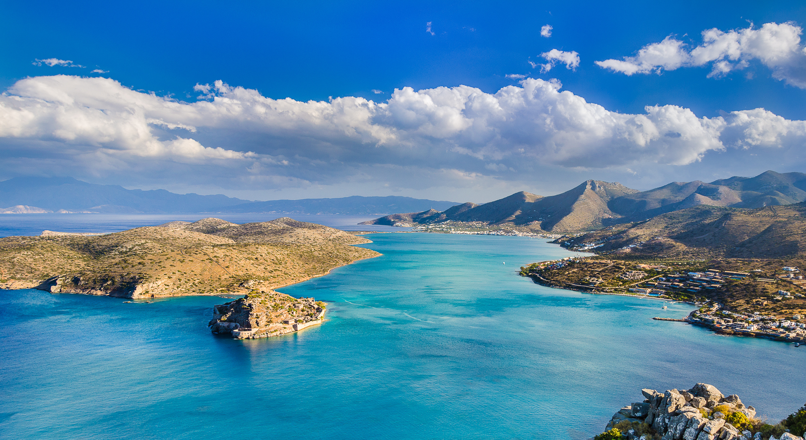

. Crète
Texte par Émilie Thièse
Mis à jour le : 15 octobre 2019
Cette île magique réunit histoire et traditions, culture et nature, plaisirs de l'exercice physique et de l'esprit, joies de la table et du partage. Que l'on plonge dans la mer ou dans l'Antiquité, que l'on court les chemins escarpés ou les terrasses festives, la Crète offre toutes ses richesses avec générosité.
La Crète est, à bien des égards, la quintessence de l'expérience grecque. La nature s'est montrée ici prolifique et il y a quelque chose d'indéniablement artistique dans la manière dont le paysage se déploie, des plages baignées de soleil au nord aux canyons déchiquetés s'ouvrant sur une côte sud toute en criques et falaises. À l'intérieur des terres, dans l'écrin des vallées, des villages pleins de charme vous ouvrent leurs portes.
À deux pas, collines arrondies et sommets enneigés sont autant d'appels à une promenade ou une randonnée. Un tour de l'île en voiture vous en mettra plein la vue, mais la Crète sait se faire apprécier à un rythme plus lent. En traversant à pied les plus longues gorges d'Europe, vous pourrez découvrir la cave où Zeus en personne est né, arpenter les vergers du plateau du Lassithi ou tout simplement laisser l'empreinte de vos pas sur le sable de l'une des plus belles plages de Méditerranée.

Palais de Knossos © World Atlas
Découvert pour la première fois en 1878 par un antiquaire Crétois – Minos Kalokairinos -, le Palais de Knossos doit sa renommée actuelle grâce aux travaux de l’archéologue Anglais Arthur John Evans qui, à partir de 1900, dirigea des fouilles importantes sur le site jusqu’en 1931. C’est donc lui qui excava le Palais de Knossos, la ville minoenne et les cimetières. Pensant avoir sous ses yeux les ruines du palais du roi de Crète Minos, en forme de labyrinthe, A. Evans interprète sa découverte comme étant le lieu où Minos aurait enfermé le monstre
du Minotaure, célèbre légende de la Grèce antique.
text par Samuel Métairie ©
1. Palais de Knossos
2. Héraklion
Héraklion est un point de départ idéal vers la plupart des plus célèbres sites et lieux de détente de l'île, même sans voiture. La capitale de la Crète s'enorgueillit de musées de premier plan, d'une forteresse vénitienne, d'un trépidant marché en plein air, d'une vie nocturne animée et d'excellents restaurants. Une fois repus de la ville, prenez un bus et rendez-vous au palais de Cnossos qui offre une bonne introduction à la société minoenne, puis allez parfaire vos connaissances le lendemain lors d'une visite du palais de Malia . Vous en avez assez des vieilles pierres ? Allez donc saluer les nombreux animaux marins de l'ultramoderne Cretaquarium , près de Gournes, ou allez vous rafraîchir dans les parcs aquatiques Acqua Plus et Water City. Non loin, vous pourrez découvrir la vie crétoise traditionnelle dans l'incroyable musée en plein air Lychnostatis. Les amateurs de vins motorisés pourront consacrer une journée à parcourir la région viticole d'Héraklion, en marquant un arrêt au musée Nikos Kazantzakis, à Myrtia, et dans les ruines minoennes d'Archanes . Les plus audacieux pourront s'aventurer dans la grotte de Skotino (emportez une lampe électrique).
 Heraklion © greek boston
Heraklion © greek boston

Samariá Gorge, Crete, Greece. © World Atlas

Crète, Greece. © Discover Greece

Crète, Greece. © Voyager en Greece
 © Sotheby, Pélion, Grèce
© Sotheby, Pélion, Grèce
 © Trvlr, Zakynthos, Grèce
© Trvlr, Zakynthos, Grèce